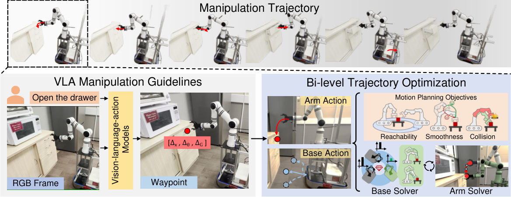
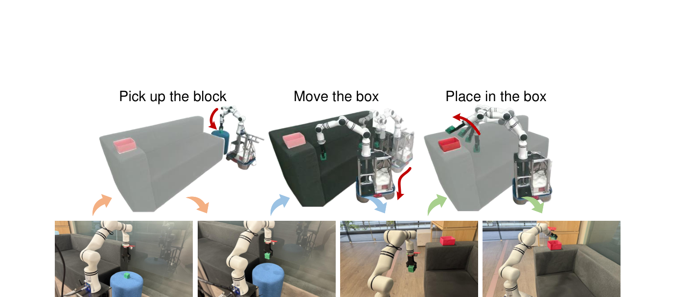

💡速记层 · 思想 / 逻辑 / 方法
默认读完就走的一层——只讲思想、逻辑、方法；效果只作验证。要核对原文/钻细节再看下面的「深读层」。
- 移动操作需要底盘+机械臂协同的 whole-body 控制，但现有 VLA 模型全部针对固定基座设计，无法直接产生底盘动作。
- 直接为移动平台从头采集大规模数据训练的成本极高，泛化能力也受限——这是现有方法的瓶颈。
- 关键洞察：固定基座 VLA 输出的末端器路径点依然具有跨任务/环境的泛化价值，只是需要物理上"可达"。
- 于是把问题拆解：VLA 负责"去哪"（路径点），双层轨迹优化负责"怎么去"（把底盘调到合适位置 → 再规划臂轨迹）。
- 双层框架把 10-DoF 联合搜索拆成 3-DoF（底盘）+ 7-DoF（臂）两步贪心，避免巨大搜索空间里陷入局部最优，同时用 Dual Annealing + SLSQP 精炼。
在 OVMM benchmark 上超越最近 SOTA 4.2%（Overall SR），Pick 阶段提升 12.4%——这直接验证了「VLA 路径点迁移」的价值。真实世界仅用 50 条示范即可部署，验证了「低成本迁移」的可行性。
想看具体数字（点开）
- OVMM Overall SR：MoManipVLA 49.4% vs. 前最优 KUZHUM 38.2%（+11.2 pp Partial SR）。
- Pick 成功率：53.1% vs. KUZHUM 35.2%（+17.9 pp），vs. 所有基线 +12.4%。
- 双层 vs. 直接搜索：49.4% vs. 48.5%（+0.9%），但延迟 693ms vs. 743ms（-7%）。
- 真实世界：Put in Bowl 40%，Stack Block 30%，Open Drawer 10%（各测 10 次）。
- 消融：去掉路径点（w/o GT）整体成功率从 49.4% 暴跌至 11.3%——VLA 路径点是核心。
Track A（人形/移动操作 VLA）直接命中：本文提供了一种"零成本迁移固定基座 VLA 到移动平台"的完整范式——waypoint 解耦 + 双层物理可行性优化。对做移动操作 VLA 的项目具备直接参考价值：框架设计、优化目标公式、OVMM 评测基线均可复用。Track B（足式算法）不相关，本文不涉及足式控制或 locomotion。
◆核心观点 · 证据
每条 = 中文论点 + 📍页/节 + 🔤逐字原文(Ctrl-F 锚点) + 🀄译文 + 💡解读。
recent advances in vision-language-action (VLA) models have shown impressive generalization capabilities, but these foundation models are developed for fixed-base manipulation tasks.
although VLA models show strong generalization in diverse manipulation tasks, their focus on fixed-base tasks prevents them from generating cooperative actions between the mobile base and robot arm for mobile manipulation.

we propose an efficient policy transfer framework named MoManipVLA to generalize the fixed-base VLA models to mobile manipulation tasks. Unlike existing mobile manipulation methods which suffer from low generalization ability across tasks and environments, MoManipVLA efficiently transfers generalizable fix-base manipulation policy from pre-trained VLA models to mobile manipulation.
Motion planning aims to generate feasible trajectories for the mobile base and the robot arm between given the consecutive waypoints of end-effectors, which should achieve pose reachability, trajectory smoothness and safety during the entire mobile manipulation process.
We acquire the overall objectives by combining the reachability, smoothness and collision costs with the hyperparameter {λi}i: O = λ1Fr + λ2Fs + λ3Fc
Directly searching the optimal solution to the objective (6) is highly complex, because the pose search space of the mobile base and the robot arm is extremely large with high DoFs. To address this problem, we propose a bi-level trajectory optimization framework to improve the efficiency of trajectory generation, where the upper level optimizes the waypoints for the base to enhance the manipulator policy space, while the lower level further optimizes the waypoints for the end-effector to follow the guidance of the pre-trained VLA models for completing manipulation tasks.
Although the bi-level optimization framework is greedy, but mobile manipulation requires searching a 10-DoF space (7 for the arm and 3 for the base), resulting in a large search space that cannot be proven convex, where direct searching may easily lead to local optima.
Our method achieves 4.2% overall success rate and 11.2% partial success rate gain, respectively. We demonstrate that our method can coordinate the motion of the robotic base and arm in order to keep the end-effector in a reasonable spatial relationship with the target object. Notably, benefiting from the generalization ability of the pre-trained VLA models, the Pick success rates of our method are 12.4% higher than the SOTA methods, which efficiently verify that the proposed approach efficiently transfers the pre-trained VLA model policies to the mobile manipulation task.
We further leverage the groundtruth object masks as the visual input for our system to fairly evaluate our mobile manipulation policy. We also evaluate our method by utilizing vision foundation models such as Detic for object mask generation. As the objects are usually highly cluttered in the household environments, the quality of visual perception degrades significantly. Therefore, the overall success rate is far below methods using groundtruth masks.

Benefiting from the generalization of the pre-trained VLA models, our approach requires only 50 samples to complete the fine-tuning and achieves 40% success rate on the mobile manipulation task.
The limitations of our method are two-fold. First, our proposed method is limited to the performance of the VLA models and can only be deployed in highly constrained movement space. Second, our system cannot generate effective motions for long-horizon tasks due to the lack of task planning modules.
⎘开源状态
论文 PDF 中项目主页链接以"here"超链接形式存在，但 PDF 文字提取无法获取 URL。以下为目前可确认的状态。
- 代码
- 未确认 论文提及"project homepage"，但 PDF 文本中无法提取具体 URL；请访问 arXiv 页面查看作者主页链接
- 权重
- 未公开 论文未提及模型权重发布计划
- 基础 VLA
- 开源 使用 OpenVLA-7B（公开可用，Apache-2.0）作为路径点生成器
- 数据
- 未公开 200 条 OVMM pick-and-place 示范轨迹及真实世界 50 条未发布
Our project homepage can be found at here.
⚖批判 · 评级
提供了一个极简而完整的"固定基座 VLA → 移动操作"迁移范式：VLA-as-waypoint-oracle + 双层物理可行性优化。逻辑清晰，公式完整（eq.3–6 + Algorithm 1），可直接复用。OVMM 基准结果扎实，消融设计合理（尤其 w/o GT 暴跌实验说服力强）。仅需 50 条示范的真实部署结论对工程实践意义大。
① 感知强依赖：w/o GT 实验（11.3%）揭示整个框架在实际视觉感知条件下成功率极低，距实用仍有差距。② 真实世界评测规模小：3 个任务各测 10 次，缺乏跨环境泛化验证。③ 无长程任务规划：作者自承，这直接限制了与 π0.5 等系统的对比价值。④ 开源状态不明：代码链接无法从 PDF 提取，复现困难。⑤ 双层优化仍依赖 Dual Annealing 启发式搜索，延迟 ~700ms 在实时场景有限制。
评级：Valuable 提供了完整可复用的迁移框架与公式，但评测规模和开源状态制约了影响力。适合作为移动操作 VLA 迁移方法的参考基线。